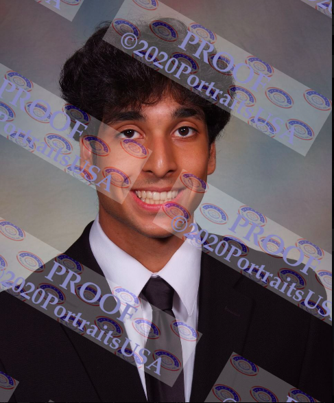

About Me

Hi!
My name's Deven. I am a Junior at the University of Washington majoring in
Computer Science and Environmental Studies. I have a keen inteerest in research,
artificial intelligence, and full-stack development. Currently, I'm focused on
the intersection of technology and environmental science to develop innovative
solutions for a sustainable future.